Café do PortãoEspera no portão
Terminal do Passageiro
Seu voo deu problema? Entenda antes de agir.
Cancelamento, atraso, overbooking, mala extraviada, reembolso: o que as regras da ANAC e o Código de Defesa do Consumidor dizem, em linguagem clara, e o que guardar como registro desde o aeroporto.
Digite a situação, como cancelado, mala ou conexão, ou toque em uma delas:
- Normas conferidas em 03/11/2026
- Res. ANAC 400/2016, com as Res. 813 e 819/2026
- 18 artigos
- OAB/MA 16.091
Painel de partidas
Todos os voos deste terminal
Cada voo é um artigo. O painel percorre todos eles; toque no seu para embarcar na leitura.
Partidas · artigos
Brasília
- GP 101Voo canceladoA1CANCELADO
- GP 102Voo atrasado ou canceladoA2ATRASADO
- GP 103Perdi a conexãoA3CONEXÃO
- GP 104Impedido de embarcarA4PRETERIDO
- GP 105Perdi um compromissoA5PERDIDO
- GP 106Sou médico e perdi o vooA6PERDIDO
- GP 201Minha mala não chegouE1EXTRAVIADA
- GP 202Mala: o que fazer no saguãoE2ESTEIRA
- GP 203Mala quebrada ou violadaE3AVARIA
- GP 301Mudaram o horário do vooC1ALTERADO
- GP 302Reembolso da passagemC2REEMBOLSO
- GP 303Desisti da passagemC324 HORAS
- GP 304Criança viajandoC4EMBARQUE
- GP 305Pessoa com deficiênciaC5EMBARQUE
- GP 401Dano moral no vooV1SALA VIP
- GP 402Voo internacionalV2EXTERIOR
- GP 403Reclamar na ANACV3RECLAMAÇÃO
- GP 404Prazos para reclamarV4PRAZOS
Últimas chegadas
Os artigos publicados mais recentemente
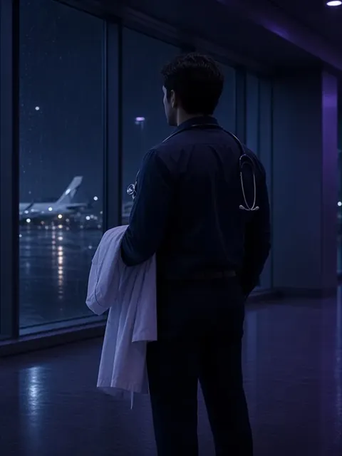
A6 · PERDIDOSou médico e perdi o voo e um compromisso financeiro: posso ser ressarcido?9 min de leitura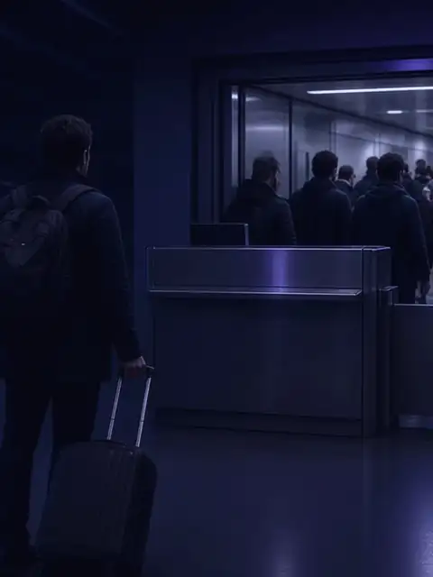
A4 · PRETERIDOFui impedido de embarcar por overbooking: quais são os meus direitos?7 min de leitura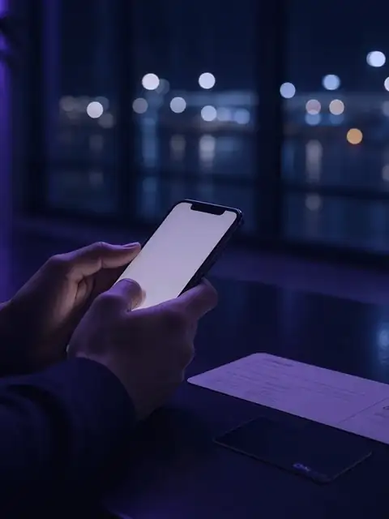
C2 · REEMBOLSOComo pedir o reembolso da passagem aérea e em quanto tempo o dinheiro deve voltar?6 min de leitura- C1 · ALTERADOA companhia aérea mudou o horário do meu voo: posso remarcar ou pedir reembolso?5 min de leitura
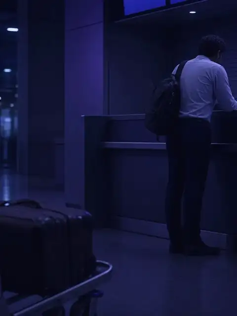
E1 · EXTRAVIADAMinha mala não chegou: quanto tempo a companhia tem para devolver e o que posso cobrar enquanto espero?6 min de leitura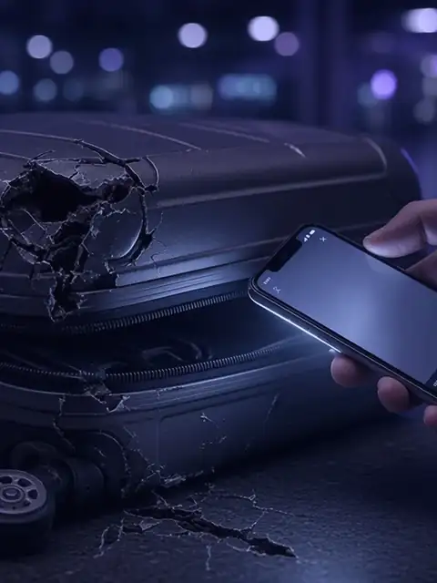
E3 · AVARIAAbri a mala em casa e estava quebrada ou faltavam objetos: ainda dá para reclamar?6 min de leitura
Portão A
Atrasos, cancelamentos e conexões
 A1 · CANCELADOMeu voo foi cancelado. Quais são meus direitos?11 min de leitura
A1 · CANCELADOMeu voo foi cancelado. Quais são meus direitos?11 min de leitura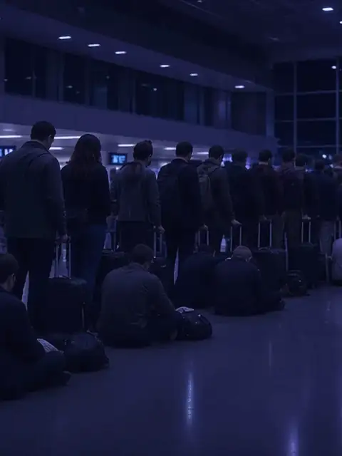
A2 · ATRASADOQuais são os direitos do passageiro quando o voo atrasa ou é cancelado?6 min de leitura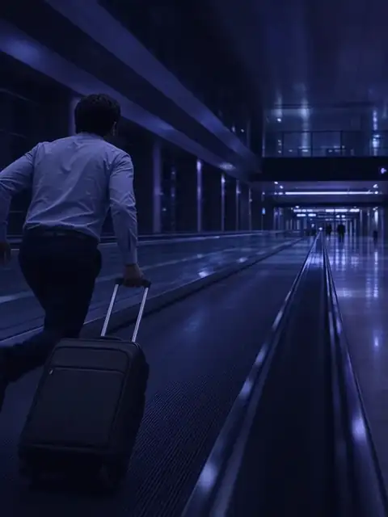
A3 · CONEXÃOPerdi a conexão porque o primeiro voo atrasou: quais são os meus direitos?5 min de leitura- A4 · PRETERIDOFui impedido de embarcar por overbooking: quais são os meus direitos?7 min de leitura
 A5 · PERDIDOVoo atrasado ou cancelado me fez perder um compromisso de trabalho. Posso pedir indenização pelo que deixei de ganhar?4 min de leitura
A5 · PERDIDOVoo atrasado ou cancelado me fez perder um compromisso de trabalho. Posso pedir indenização pelo que deixei de ganhar?4 min de leitura- A6 · PERDIDOSou médico e perdi o voo e um compromisso financeiro: posso ser ressarcido?9 min de leitura
Esteira de bagagem
Mala extraviada, danificada ou violada
- E1 · EXTRAVIADAMinha mala não chegou: quanto tempo a companhia tem para devolver e o que posso cobrar enquanto espero?6 min de leitura
 E2 · ESTEIRAMinha mala não chegou ou chegou danificada. O que fazer ainda no aeroporto?13 min de leitura
E2 · ESTEIRAMinha mala não chegou ou chegou danificada. O que fazer ainda no aeroporto?13 min de leitura- E3 · AVARIAAbri a mala em casa e estava quebrada ou faltavam objetos: ainda dá para reclamar?6 min de leitura
Check-in e embarque
Reembolso, desistência, horário e acessibilidade
- C1 · ALTERADOA companhia aérea mudou o horário do meu voo: posso remarcar ou pedir reembolso?5 min de leitura
- C2 · REEMBOLSOComo pedir o reembolso da passagem aérea e em quanto tempo o dinheiro deve voltar?6 min de leitura
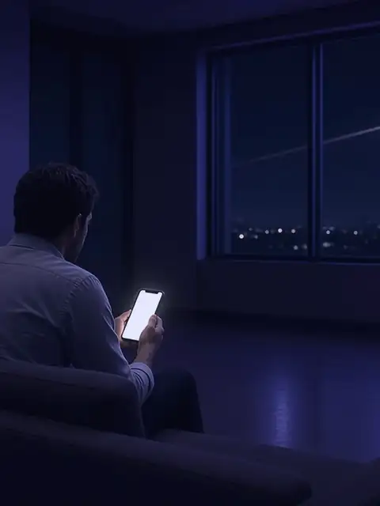
C3 · 24 HORASComprei a passagem e desisti: posso cancelar em 24 horas sem multa?5 min de leitura- C4 · EMBARQUECriança ou adolescente pode viajar de avião sem os pais? Que autorização é exigida?5 min de leitura
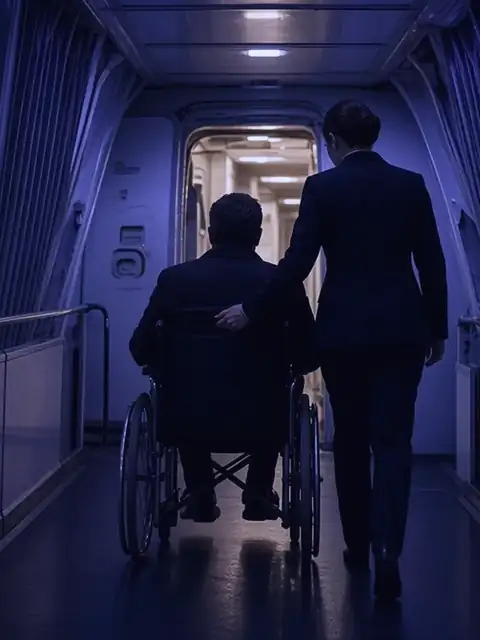
C5 · EMBARQUEPassageiro com deficiência ou mobilidade reduzida: quais são os direitos no aeroporto e no avião?7 min de leitura
Sala VIP
Direitos, prazos, indenização e reclamação
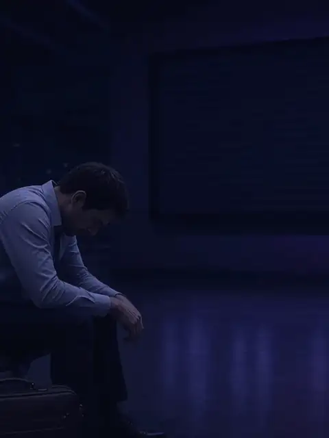
V1 · SALA VIPAtraso ou cancelamento de voo dá direito a indenização por danos morais?5 min de leitura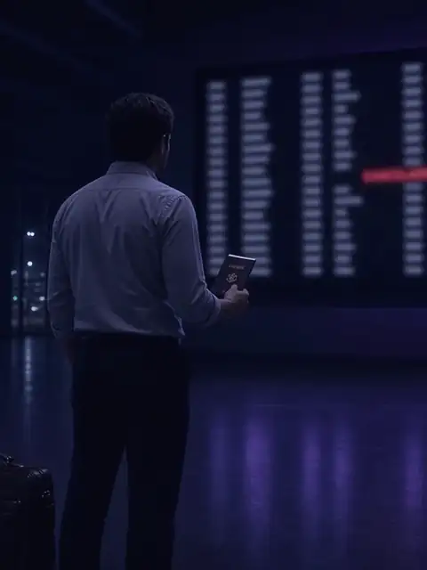
V2 · EXTERIORVoo internacional atrasado, cancelado ou com mala extraviada: vale o Código do Consumidor ou a Convenção de Montreal?6 min de leitura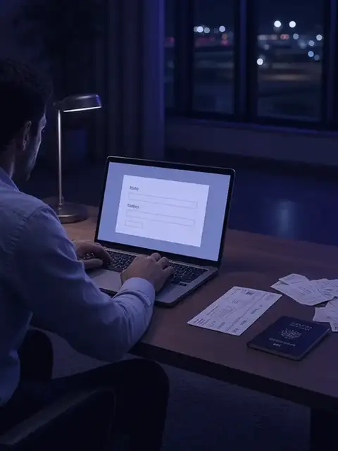
V3 · RECLAMAÇÃOComo reclamar da companhia aérea na ANAC e no consumidor.gov.br?5 min de leitura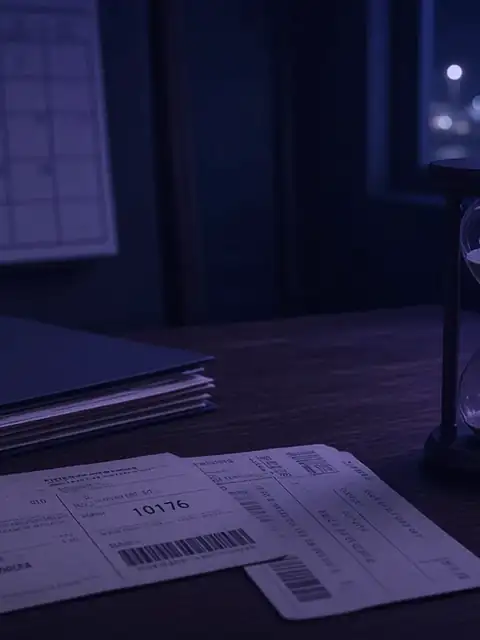
V4 · PRAZOSQual é o prazo para reclamar ou processar a companhia aérea?5 min de leitura
Praça de alimentação
Leituras rápidas para a espera
Pequenas porções do que as normas preveem. Cada balcão leva ao artigo completo.
- Leitura completa
- Todos os prazosBalcão dos PrazosBagagem
- Como pedirQuiosque do ReembolsoPassagem
- Entenda a regraDoceria das 24 HorasCompra recente
- O que guardarBanca do ViajanteRegistros

Sala de embarque
Está no aeroporto agora?
Nove situações, cada uma com o que fazer no momento, o que guardar como prova e quais são os seus direitos. Inclui um checklist que fica salvo só no seu navegador.
Abrir o painelGuia do Consumidor
O passageiro é o começo. O guia vai crescer.
Outras relações de consumo do dia a dia vão ganhar a mesma organização: situação, regra e o que guardar.
- DisponívelPassageiro aéreo
- Em preparaçãoPlano de saúde
- Em preparaçãoBancos e cartões
- Em preparaçãoCompras e entregas

Quem escreve
Lucas Brito Ladeia · OAB/MA 16.091
Advogado inscrito na OAB/MA sob o nº 16.091, com atuação desde 2016 em Imperatriz-MA. Atendimento presencial e online para pessoas em todo o Brasil.
Os textos deste guia são informativos. Explicam o que dizem as normas e como os tribunais costumam tratar cada tema. Cada caso depende dos seus fatos e documentos, e nenhum texto substitui a análise individual.